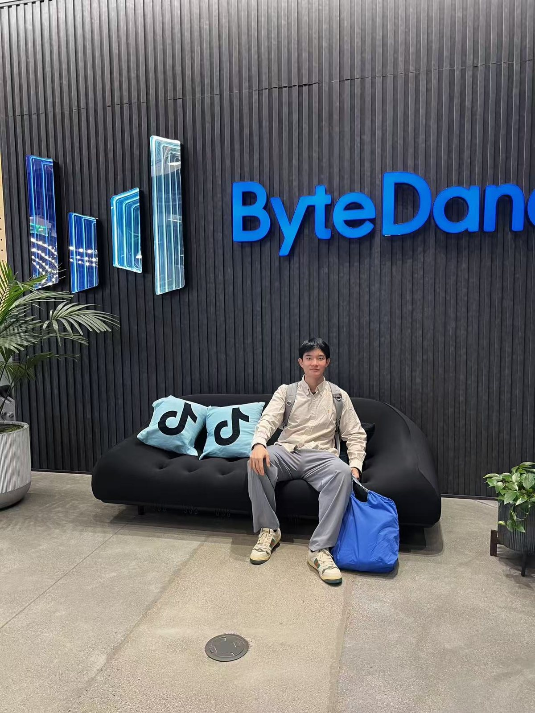
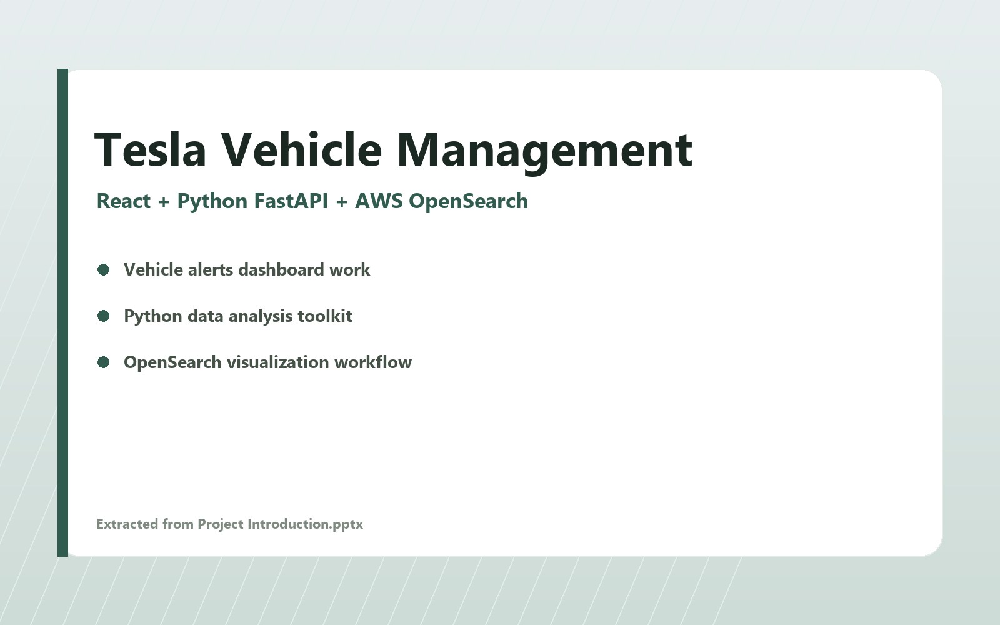
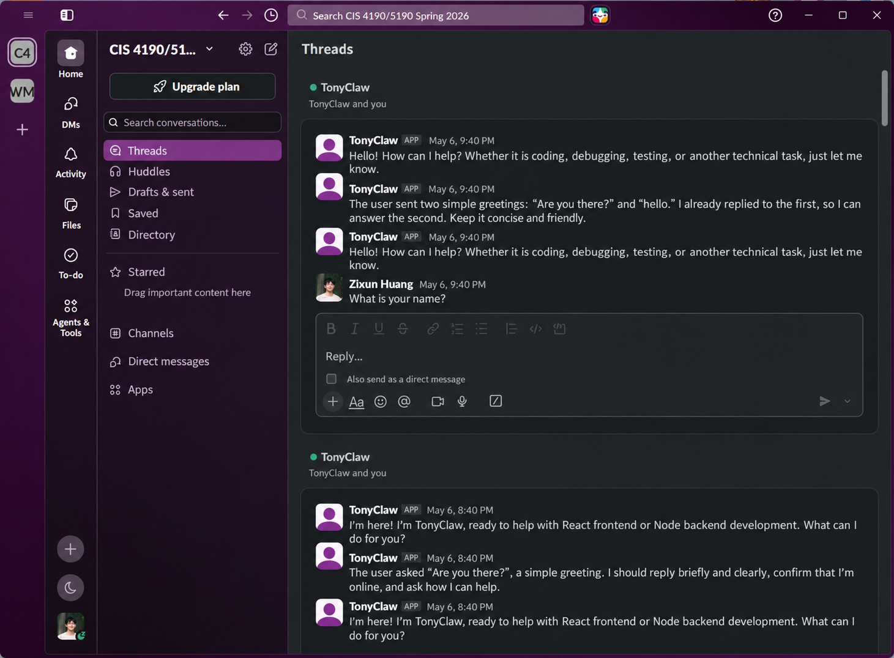
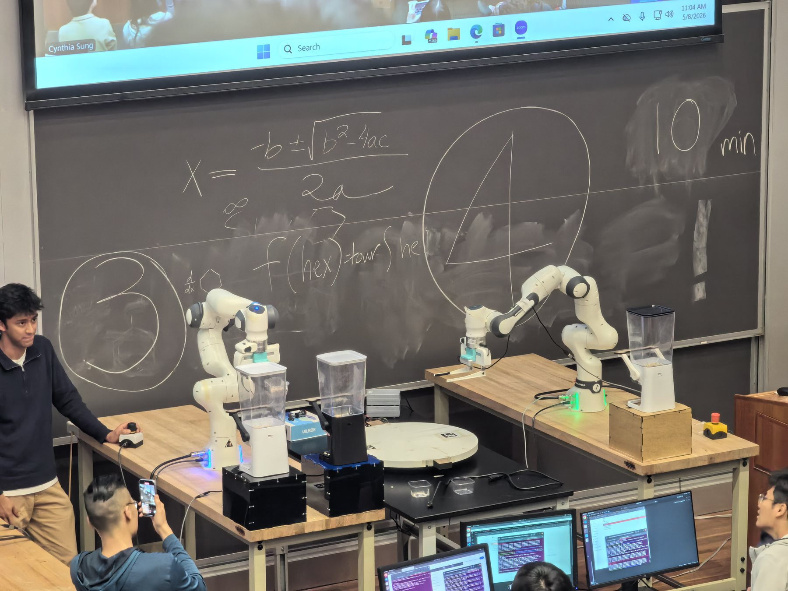
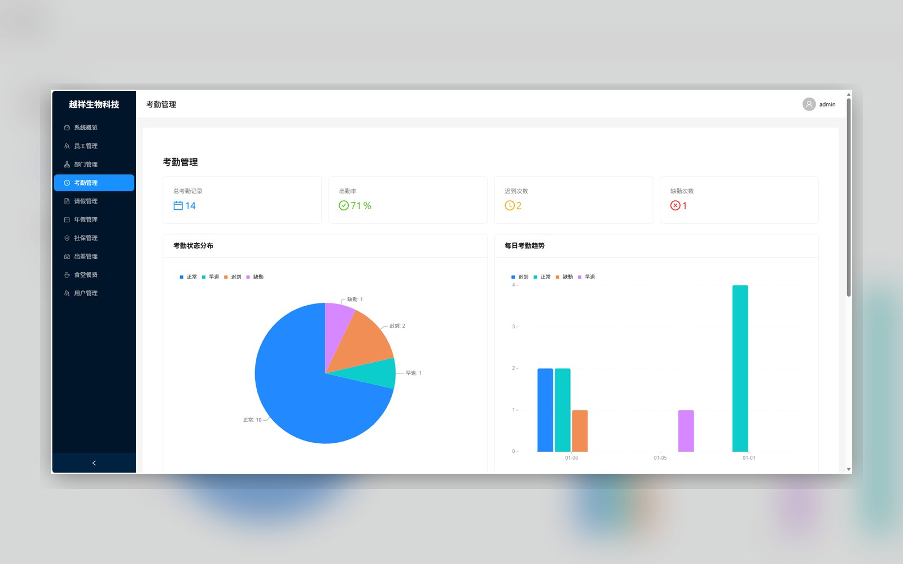
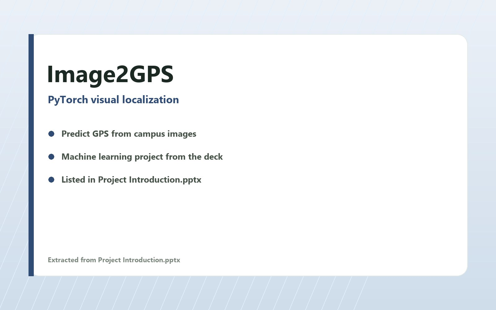
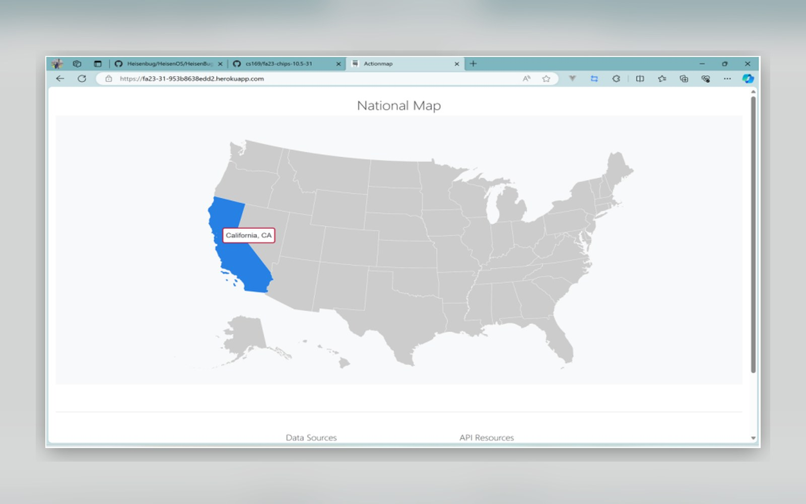
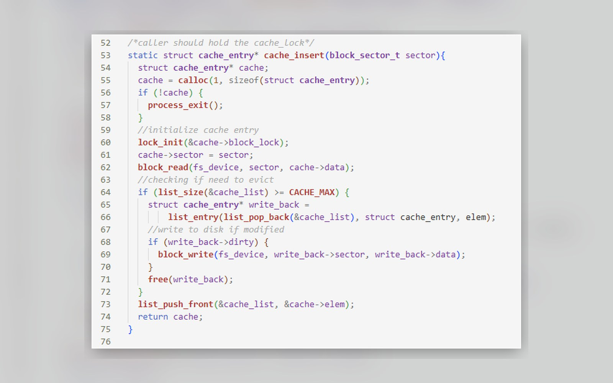

AI agents, workflow automation, robotic manipulation, perception, and maintainable full-stack systems.
Welcome
Hi! I'm Zixun Huang.
I build AI agents, robotic systems, and reliable software products that turn ambitious ideas into practical experiences.
I am an MSE Electrical Engineering student at the University of Pennsylvania. My current focus is AI agent development: tool-using agents, workflow automation, context engineering, and full-stack products, alongside robotics and perception systems that connect software intelligence with the physical world.
Clear requirements, practical architecture, testable changes, and careful handling of how agents use tools, memory, and human feedback.
Python, C++, React, TypeScript, Docker, AWS, PyTorch, AprilTag, inverse kinematics, and MCP.
Internship Experience
Engineering for real-world scale
Product-facing software work spanning ads measurement, agentic automation, vehicle systems, and engineering data platforms.

06/2026 - 08/2026
San Jose, CA
ByteDance
Software Engineering Intern Ads Measurement, Signal and Privacy
- Improved TikTok Pixel funnel tracking and enriched identity signals by 3.2%.
- Built guardrails for an agentic Pixel auto-setup workflow using lower-cost models.
- Shipped EEA-compliant search and ad-detail features for the Commerce Content Library.

03/2024 - 08/2024
Shanghai, China
Tesla
Software Engineering Intern APAC Service Engineering
- Developed the China Vehicle Management Platform with React and TypeScript.
- Created Python tooling and dashboards for large-scale vehicle alert analysis.
- Built an AWS OpenSearch workflow that reduced reliance on scripts and front-end tasks.
Selected Projects
Ideas built into working systems
A rotating collection of work across AI agents, robotics, computer vision, full-stack products, and systems engineering.

03/2026 - 06/2026
AI Agent Project
TonyClaw
Personal coding agent with a Pi-mono runtime, Slack ChatOps, tool calling, and isolated Docker/Git execution.

03/2026 - 05/2026
Robotics Project
Dual-Arm Dispensing Robot
Two Franka Panda arms coordinate through a turntable to prepare and serve a cereal and oatmeal meal.

12/2025 - 03/2026
Project
HR Management System
Enterprise HR system developed with AI-assisted engineering, onboarding automation, RBAC, encrypted storage, and cloud deployment.

10/2025 - 12/2025
Project
Image2GPS
Visual localization model that predicts GPS coordinates from a single Penn campus image.

10/2023 - 12/2023
Project
ActionMap
Ruby on Rails map-based web app for candidate information and related news.

01/2023 - 05/2023
Project
PintOS
x86 teaching operating system with syscalls, priority scheduling, and file-system work.
Honors
Recognition
2022-2023 Tongji University International and Hong Kong-Macao-Taiwan Exchange Scholarship, Third Class
2021-2022 Tongji University Undergraduate Social Activity Scholarship
2021-2022 Tongji University Undergraduate Second-Class Scholarship
2021-2022 Excellent Student Leader, Tongji University
2021 Men's Group Champion, National Lacrosse University Student League
Education
Learning Path
University of Pennsylvania
MSE Electrical Engineering. GPA: 4.00/4.00.
Tongji University
Bachelor of Engineering, Software Engineering. GPA: 90.8/100.
University of California, Berkeley
Computer Science exchange student. GPA: 3.94/4.00, with A+ grades in Software Engineering and Data Structures.
Contact
Let's connect.
I am open to AI agent, robotics, software engineering, and applied data opportunities.